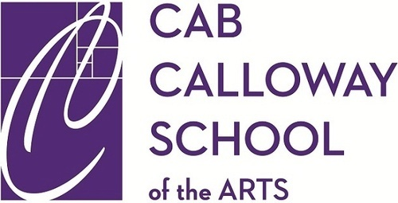

About Me
My name is Samuel Bernal and I am currently a student at Cab Calloway School of the Arts. I am 16 and I have interests in graphic design, web design, and computer science and programming. This website is essentially a documentation of my experience and skills in the fields that I want to pursue, and a place to advertise myself to any work interests.
I see myself as someone who is passionate about work and projects and is dedicated to overall success through cooperation and attention to detail. I have honed my skills through competing in events and have had success in the past, so I believe that I have a good chance for success in the future.
Education
Sophomore at Cab Calloway School of the Arts, majoring in Digital media. Graduating 2020. Cumulative weighted GPA of 4.7 At my current high school I have been able to profoundly expand on my interests in art and programming through courses and school-based activities, and I have taken advantage of many opportunities that I am thankful for.
